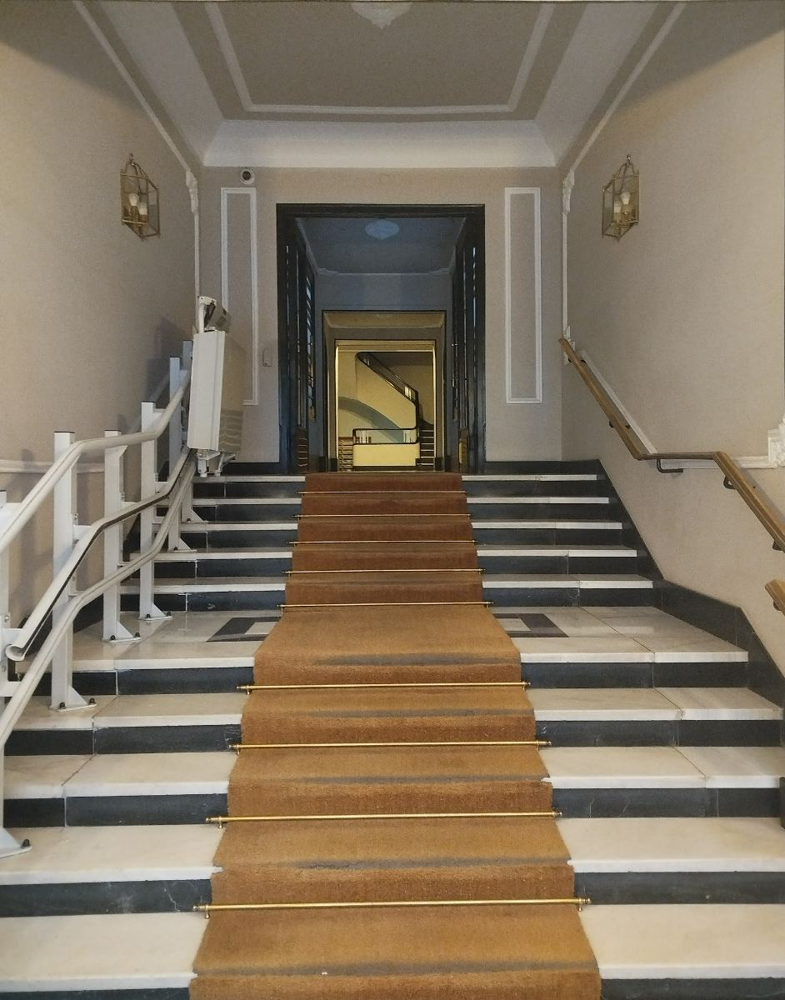

Neuromoduladores
01Suavizar el gesto, conservar la expresión.
Abordaje conservador del tercio superior: frente, entrecejo y contorno de ojos. También indicado en bruxismo e hiperhidrosis.
- ✦ Tercio superior
- ✦ Bruxismo · masetero
- ✦ Hiperhidrosis
Medicina estética · Salamanca, Madrid
★★★★★ 5,0 en Google · Centro sanitario CS 21796
Una clínica con nombre, número y dirección
Datos verificables en la ficha de Google y en el registro sanitario de la Comunidad de Madrid.
Quiénes somos
“El mejor cumplido no es «¿qué te has hecho?» — es «qué bien estás».”
BeLift es una clínica de medicina estética en el barrio de Salamanca, con equipo médico y registro sanitario de la Comunidad de Madrid. Nuestro trabajo empieza siempre igual: mirándote, escuchándote y entendiendo qué quieres — antes de proponer nada.
Creemos en la estética que respeta tu gesto. Si algo no te conviene, te lo decimos — y si la mejor opción es esperar, también. Así se construye la confianza que hace volver.
BeLift Medicina Estética · Madrid · Centro sanitario CS 21796

Tratamientos
Trabajamos la armonía global — cada tratamiento se decide mirando el conjunto, nunca por catálogo.
Suavizar el gesto, conservar la expresión.
Abordaje conservador del tercio superior: frente, entrecejo y contorno de ojos. También indicado en bruxismo e hiperhidrosis.
Proporción, no volumen por volumen.
Ácido hialurónico con diseño individual y mano conservadora: pómulos, mentón, mandíbula, ojeras y perfil.
Piel con luz propia.
Bioestimulación e hidratación profunda que devuelven elasticidad y luminosidad, con resultado acumulativo.
Textura, poros y manchas, bajo control.
Renovación cutánea médica pensada como mantenimiento: piel más uniforme sesión a sesión.
La idoneidad se valora siempre en consulta, con tu historia clínica.

Tu plan, en tres preguntas
Líneas de expresión, volumen, calidad de piel — o solo entender qué opciones tienes.
Cambia el plan por completo, y las dos respuestas valen igual.
Entonces la primera visita es para escucharte. Sin agujas ese día, si así lo prefieres.
Tu primera visita, paso a paso
Por WhatsApp o por teléfono. Te confirmamos personalmente el primer hueco disponible.
En la clínica: tus objetivos, la exploración de tu rostro y todas tus preguntas. Sin prisa y sin presión.
Propuesta personalizada con presupuesto detallado en consulta. Se ajusta contigo — o se deja madurar.
Solo si decides avanzar. Materiales certificados y técnica conservadora.
Te acompañamos en los días posteriores para revisar la evolución. La visita no termina en la camilla.
La clínica
Luz natural, calma y detalle — en un bajo de Núñez de Balboa. Las fotos son de la clínica real.


Tres principios
El resultado correcto parece descanso, no intervención. Si se nota de más, se hizo de más.
Equipo médico, centro sanitario registrado y materiales certificados. La estética es un acto médico.
Te explicamos todo, en tu idioma y sin tecnicismos. Las decisiones se toman contigo, nunca por ti.
“Que el espejo diga descanso — no retoque.”
Equipo BeLift
Reserva tu primera valoración
Valoración personalizada en la clínica: tus objetivos, tu rostro, un plan pensado contigo. Sin compromiso.
C/ Núñez de Balboa 30, Bajo D · Salamanca, 28001 Madrid
@belift_madrid · Cómo llegar